Column chart
df1 <- tribble(
~year, ~nidp,
"2010",24.98,
"2011",22.44,
"2012",26.39,
"2013",33.34,
"2014",37.87,
"2015",40.52,
"2016",40.29,
"2017",39.98,
"2018",41.34,
"2019",45.70,
"2020",48.03)
ggplot(df1) +
geom_col(aes(x = year, y = nidp),
fill = unhcr_pal(n = 1, "pal_blue"),
width = 0.8) +
labs(title = "Globalement IDP displacement | 2010 - 2020",
y = "Number of people (in million)",
caption = "Source: UNHCR Refugee Data Finder\n© UNHCR, The UN Refugee Agency") +
scale_y_continuous(expand = expansion(c(0, 0.1))) +
theme_unhcr(grid = "Y",
axis = "x",
axis_title = "y")Column chart with data label
ggplot(df1) +
geom_col(aes(x = year, y = nidp),
fill = unhcr_pal(n = 1, "pal_blue"),
width = 0.8) +
geom_text(aes(x = year, y = nidp, label = nidp),
vjust = -1,
size = 3) +
labs(title = "Globalement IDP displacement | 2010 - 2020",
subtitle = "Number of people (million)",
caption = "Source: UNHCR Refugee Data Finder\n© UNHCR, The UN Refugee Agency") +
scale_y_continuous(expand = expansion(c(0, 0.1))) +
theme_unhcr(grid = FALSE,
axis = "x",
axis_text = "x",
axis_title = FALSE)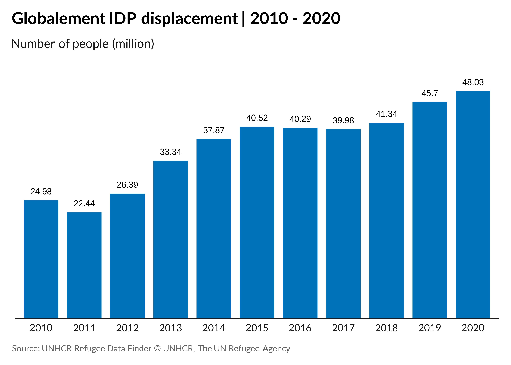
Bar chart
df2 <- tribble(
~country,~displaced,
"Eritrea",522000,
"Central African Rep.",642000,
"Sudan",788000,
"Somalia",815000,
"DRC",840000,
"Myanmar",1103000,
"South Sudan",2189000,
"Afghanistan",2595000,
"Venezuela",4027000,
"Syria",6690000)
df2 |>
ggplot() +
geom_col(aes(x = displaced/1e6,
y = reorder(country, displaced)),
fill = unhcr_pal(n = 1, "pal_blue"),
width = 0.8) +
labs(title = "People displaced across borders by country of origin | 2020",
x = "Number of people (million)",
y = "",
caption = "Source: UNHCR Refugee Data Finder\n© UNHCR, The UN Refugee Agency") +
scale_x_continuous(expand = expansion(c(0, 0.1)),
breaks = pretty_breaks(n = 7)) +
theme_unhcr(grid = "X",
axis = "y")Bar chart with data label
df2 |>
ggplot() +
geom_col(aes(x = displaced/1e6,
y = reorder(country, displaced)),
fill = unhcr_pal(n = 1, "pal_blue"),
width = 0.8) +
geom_text(aes(x = displaced/1e6,
y = reorder(country, displaced),
label = round(displaced/1e6, 2)),
hjust = -0.5,
size = 3) +
labs(title = "People displaced across borders by country of origin | 2020",
subtitle = "Number of people (million)",
caption = "Source: UNHCR Refugee Data Finder\n© UNHCR, The UN Refugee Agency") +
scale_x_continuous(expand = expansion(c(0, 0.1))) +
theme_unhcr(grid = FALSE,
axis = "y",
axis_text = "y",
axis_title = FALSE)
Grouped column chart
df3 <- tribble(
~year,~EHAGL,~RBSA,~RBWCA,
"2017",7,4,3,
"2018",9,5,4,
"2019",8,6,5,
"2020",10,6,6)
df3 |>
pivot_longer(cols = -year) |>
ggplot() +
geom_col(aes(year, value, fill = name),
position = position_dodge(width = 0.7),
width = 0.6) +
scale_fill_unhcr_d(palette = "pal_unhcr", nmax = 3, order = c(2, 3, 1)) +
labs(title = "IDPs of concern to UNHCR in Africa region | 2017-2020",
y = "Number of people (million)",
caption = "Source: UNHCR Refugee Data Finder\n© UNHCR, The UN Refugee Agency") +
scale_y_continuous(expand = expansion(c(0, 0.2)),
breaks = pretty_breaks()) +
theme_unhcr(grid = "Y",
axis_title = "y")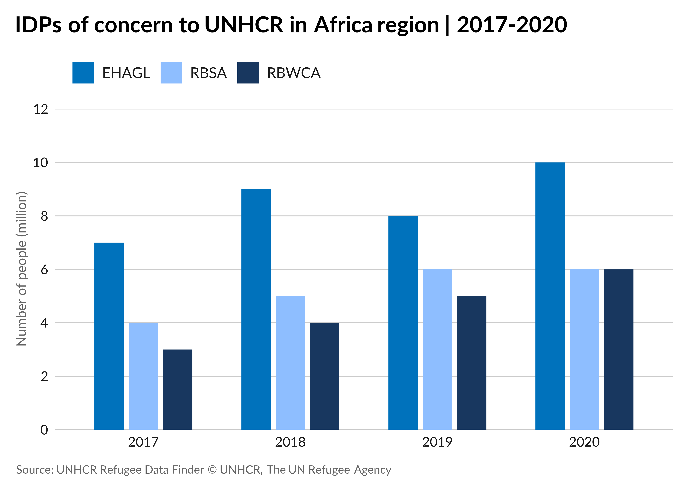
Grouped column chart with data label
df3 |>
pivot_longer(cols = -year) |>
ggplot() +
geom_col(aes(x = year, y = value, fill = name),
position = position_dodge(width = 0.7),
width = 0.6) +
geom_text(aes(year, value, group = name, label = value),
position = position_dodge(width = 0.7),
vjust = -1,
size = 3) +
scale_fill_unhcr_d(palette = "pal_unhcr", nmax = 3, order = c(2, 3, 1)) +
labs(title = "IDPs of concern to UNHCR in Africa region | 2017-2020",
subtitle = "Number of people (million)",
caption = "Source: UNHCR Refugee Data Finder\n© UNHCR, The UN Refugee Agency") +
scale_y_continuous(expand = expansion(c(0, 0.2)),
breaks = pretty_breaks()) +
theme_unhcr(grid = FALSE,
axis = "x",
axis_text = "x",
axis_title = FALSE)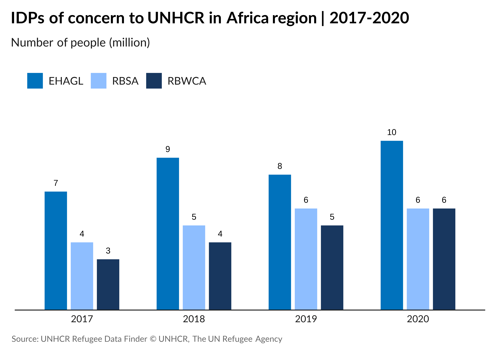
Grouped bar chart
df4 <- tribble(
~region,~'2019',~'2020',
"West and Central Africa",70834,21581,
"Southern Africa",85960,18022,
"Middle East/North Africa",70799,35805,
"Europe",914699,649308,
"East and Horn of Africa,\nand Great Lakes",71303,47924,
"Asia and Pacific",119894,58789,
"Americas",976547,480286)
df4 |>
pivot_longer(cols = -region) |>
ggplot() +
geom_col(aes(value/1e3, fct_rev(factor(region)), fill = name),
position = position_dodge(0.7),
width = 0.6) +
scale_x_continuous(expand = expansion(c(0, 0.1))) +
labs(title = "Individual asylum applications registered by region | 2019-2020",
x = "Number of people (thousand)",
caption = "Source: UNHCR Refugee Data Finder\n© UNHCR, The UN Refugee Agency") +
scale_fill_unhcr_d(palette = "pal_unhcr") +
theme_unhcr(grid = "X",
axis = "y",
axis_title = "x")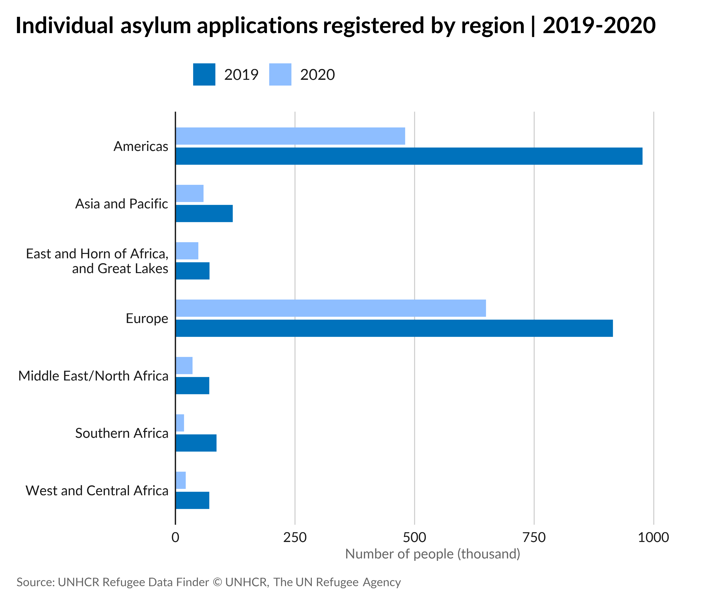
Grouped bar chart with data label
df4 |>
pivot_longer(cols = -region) |>
ggplot() +
geom_col(aes(value/1e3, fct_rev(factor(region)), fill = name),
position = position_dodge(width = 0.7),
width = 0.6) +
geom_text(aes(value/1e3,
fct_rev(factor(region)),
group = name,
label = round(value/1e3)),
position = position_dodge(width = 0.7),
hjust = -0.25,
size = 3) +
scale_x_continuous(expand = expansion(c(0, 0.1))) +
labs(title = "Individual asylum applications registered by region | 2019-2020",
subtitle = "Number of people (thousand)",
caption = "Source: UNHCR Refugee Data Finder\n© UNHCR, The UN Refugee Agency") +
scale_fill_unhcr_d(palette = "pal_unhcr") +
theme_unhcr(grid = FALSE,
axis = "y",
axis_title = FALSE,
axis_text = "y")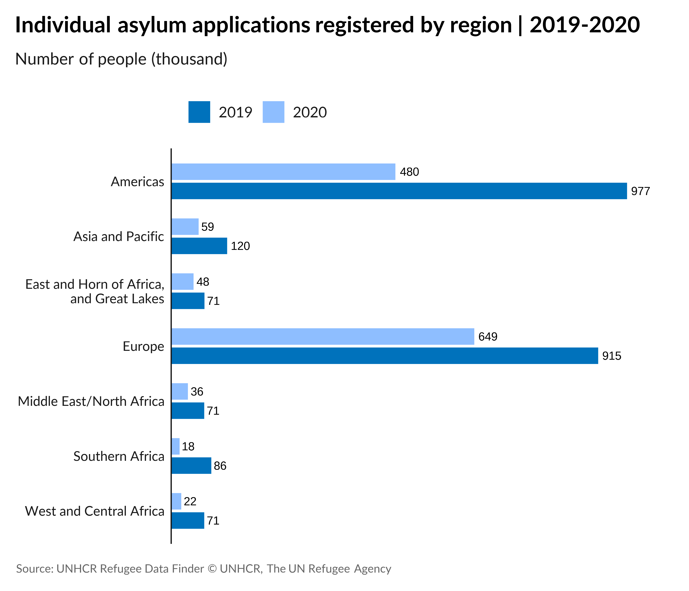
Stacked column chart
df5 <- tribble(
~Year,~`UNHCR resettlement`,~`Other resettlement`,
"2010",73,26,
"2011",62,18,
"2012",69,20,
"2013",71,27,
"2014",74,32,
"2015",82,26,
"2016",126,47,
"2017",65,38,
"2018",56,37,
"2019",64,44,
"2020",23,11)
df5 |>
pivot_longer(cols = -Year) |>
ggplot() +
geom_col(aes(x = Year, y = value, fill = name),
width = 0.7) +
scale_fill_unhcr_d(palette = "pal_unhcr", nmax = 2, order = 2:1) +
scale_y_continuous(expand = expansion(c(0, 0.25))) +
labs(title = "Resettlement by UNHCR and others | 2010-2020",
y = "Number of people (thousand)",
caption = "Source: data source here\n© UNHCR, The UN Refugee Agency") +
theme_unhcr(grid = "Y",
axis = "x",
axis_title = "y")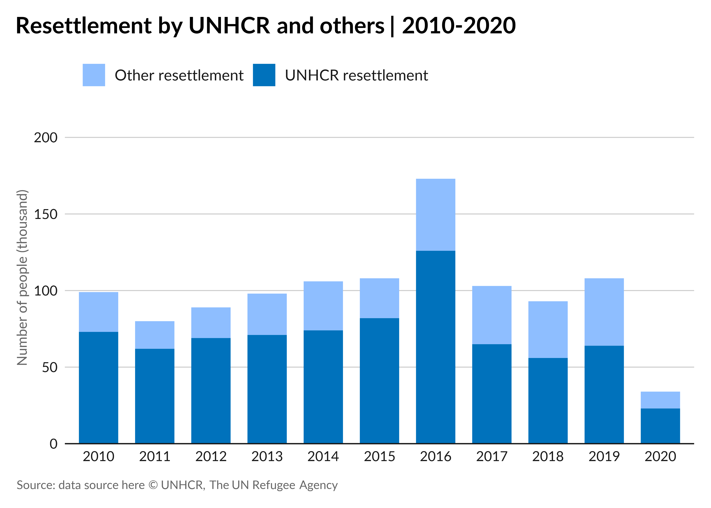
Stacked column chart with data label
df5 |>
pivot_longer(cols = -Year) |>
ggplot() +
geom_col(aes(x = Year, y = value, fill = name),
width = 0.7,
position = position_stack()) +
geom_text(aes(x = Year, y = value, color = name, label = value),
position = position_stack(vjust = 0.5),
show.legend = FALSE,
size = 3) +
scale_color_manual(values = c("#000000", "#FFFFFF")) +
scale_fill_unhcr_d(palette = "pal_unhcr", nmax = 2, order = 2:1) +
scale_y_continuous(expand = expansion(c(0, 0.25))) +
labs(title = "Resettlement by UNHCR and others | 2010-2020",
subtitle = "Number of people (thousand)",
caption = "Source: data source here\n© UNHCR, The UN Refugee Agency") +
theme_unhcr(grid = FALSE,
axis = "x",
axis_text = "x",
axis_title = FALSE)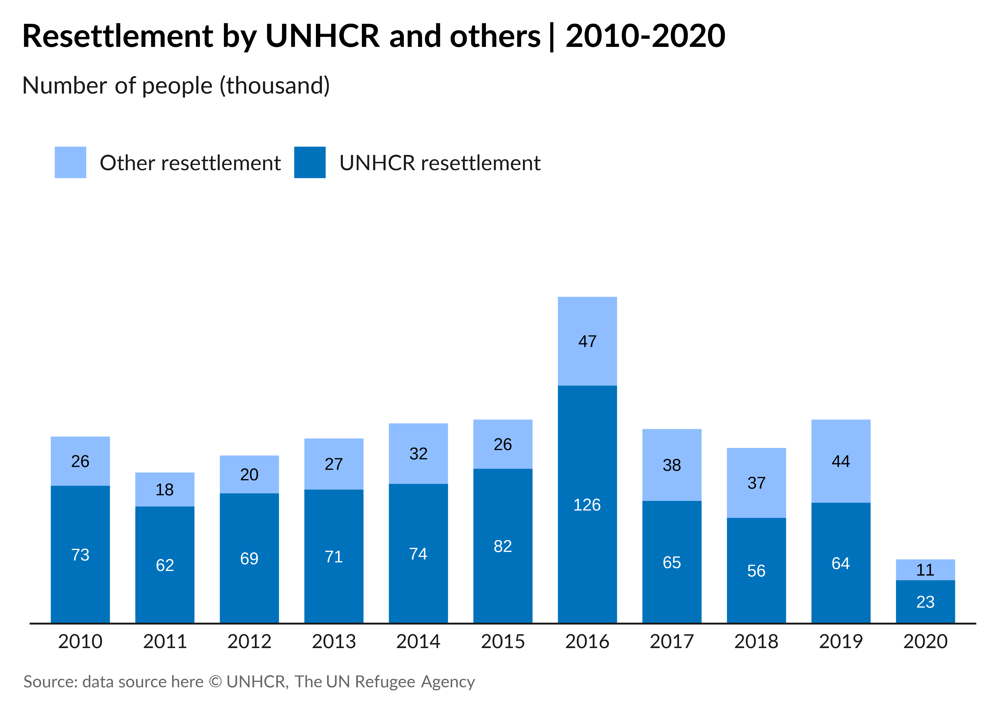
Stacked bar chart
df6 <- tribble(
~Country,~Refugees,~`Asylum-seekers`,~`Venezuelans displaced abroad`,
"Eritrea",0.5,0.1,0.0,
"Central African Rep.",0.6,0.0,0.0,
"Sudan",0.8,0.1,0.0,
"Somalia",0.8,0.1,0.0,
"DRC",0.8,0.1,0.0,
"Myanmar",1.1,0.0,0.0,
"South Sudan",2.2,0.0,0.0,
"Afghanistan",2.6,0.2,0.0,
"Venezuela",0.2,0.9,3.8,
"Syria",6.7,0.1,0.0)
df6 |>
pivot_longer(cols = -Country) |>
ggplot() +
geom_col(aes(x = value, y = reorder(Country, value), fill = name),
width = 0.7) +
labs(title = "People displaced across borders by country of origin | 2020",
x = "Number of people (million)",
caption = "Source: data source here\n© UNHCR, The UN Refugee Agency") +
scale_x_continuous(expand = expansion(c(0, 0.1))) +
scale_fill_unhcr_d(palette = "pal_unhcr",
nmax = 10, order = c(3, 1, 9)) +
theme_unhcr(grid = "X",
axis = "y",
axis_title = "x")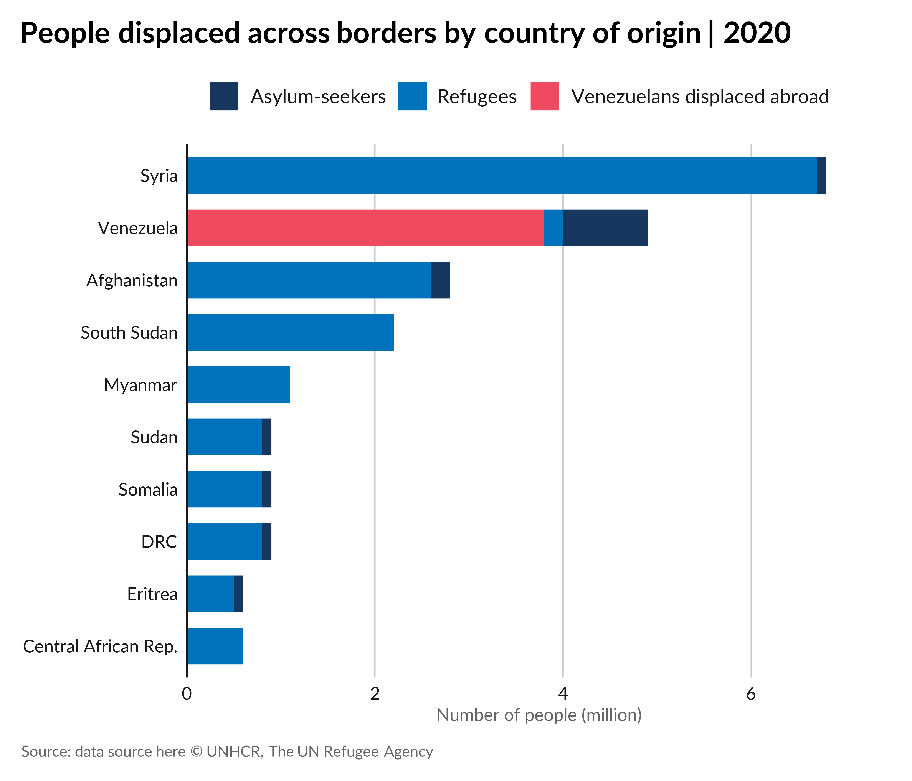
Stacked bar chart with data label
df6_long <- df6 |>
pivot_longer(cols = -Country)
ggplot() +
geom_col(data = df6_long,
aes(x = value, y = reorder(Country, value), fill = name),
width = 0.7,
position = position_stack()) +
geom_text(data = filter(df6_long, value > 0),
aes(x = value, y = reorder(Country, value),
group = name, label = value),
position = position_stack(vjust = 0.5),
color = "#FFFFFF",
size = 3) +
labs(title = "People displaced across borders by country of origin | 2020",
subtitle = "Number of people (million)",
caption = "Source: data source here\n© UNHCR, The UN Refugee Agency") +
scale_x_continuous(expand = expansion(c(0, 0.1))) +
scale_fill_unhcr_d(palette = "pal_unhcr",
nmax = 10, order = c(3, 1, 9)) +
theme_unhcr(grid = FALSE,
axis = "y",
axis_text = "y",
axis_title = FALSE,
legend = TRUE)100% stacked column chart
df7 <- tribble(
~Year,~Unearmarked,~`Softly earmarked`,~Earmarked,~`Tightly earmarked`,
"2012",20,32,20,28,
"2013",16,20,30,34,
"2014",15,18,37,30,
"2015",14,22,40,24,
"2016",15,20,43,22,
"2017",15,20,45,20,
"2018",15,18,40,27,
"2019",16,14,45,25,
"2020",14,15,46,25)
df7_long <- df7 |>
pivot_longer(cols = -Year)
df7 |>
pivot_longer(cols = -Year) |>
ggplot() +
geom_col(aes(x = Year, y = value, fill = name),
width = 0.7,
position = position_fill()) +
scale_fill_unhcr_d(palette = "pal_unhcr") +
scale_y_continuous(expand = expansion(c(0, 0.01)),
labels = percent) +
labs(title = "Levels of earmarking | 2012-2020",
caption = "Source: UNHCR\n© UNHCR, The UN Refugee Agency") +
theme_unhcr(grid = "Y",
axis = "x",
axis_title = FALSE)Population pyramid
df8 <- tribble(
~ages,~male,~female,
"0-4",0.06,0.06,
"5-11",0.09,0.08,
"12-17",0.06,0.06,
"18-59",0.27,0.25,
"60+",0.03,0.03) |>
mutate(ages = factor(ages,
levels = c("0-4", "5-11", "12-17", "18-59", "60+"),
ordered = TRUE))
ggplot() +
geom_col(data = df8,
aes(-male, ages, fill = "Male"),
width = 0.7) +
geom_col(data = df8,
aes(female, ages, fill = "Female"),
width = 0.7) +
geom_text(data = df8,
aes(-male, ages, label = percent(abs(male))),
hjust = 1.25,
size = 3) +
geom_text(data = df8,
aes(female, ages, label = percent(female)),
hjust = -0.25,
size = 3) +
labs(title = "Demographics of people who have been forcibly displaced | 2020",
caption = "Note: figures do not add up to 100 per cent due to rounding
Source: UNHCR Refugee Data Finder
© UNHCR, The UN Refugee Agency") +
scale_x_continuous(expand = expansion(c(0.1, 0.1))) +
scale_fill_manual(values = setNames(unhcr_pal(n = 3, "pal_unhcr")[c(2, 1)],
c("Male", "Female"))) +
theme_unhcr(grid = FALSE,
axis = FALSE,
axis_text = "y",
axis_title = FALSE)Line chart
df9 <- tribble(
~Year,~Refugees,~IDPs,
1990,17.4,0,
1991,16.85,0,
1992,17.84,0,
1993,16.33,4.2,
1994,15.75,5.32,
1995,14.9,4.29,
1996,13.36,4.85,
1997,12.01,4.57,
1998,11.48,5.06,
1999,11.69,3.97,
2000,12.13,6,
2001,12.12,5.1,
2002,10.59,4.65,
2003,9.59,4.18,
2004,9.57,5.43,
2005,8.66,6.62,
2006,9.88,12.79,
2007,11.39,13.74,
2008,10.49,14.44,
2009,10.4,15.63,
2010,10.55,16,
2011,10.4,15.47,
2012,10.5,17.67,
2013,11.7,23.93,
2014,14.38,32.27,
2015,16.11,37.49,
2016,17.18,36.63,
2017,19.94,39.12,
2018,20.36,41.43,
2019,20.41,43.5,
2020,20.65,48.56)
df9 |>
pivot_longer(cols = c("Refugees", "IDPs")) |>
ggplot(aes(x = Year, y = value, color = name)) +
geom_line(size = 1) +
geom_dl(aes(label = name),
method = list(dl.trans(x = x + 0.1),"last.points"),
size = 3) +
labs(title = "Number of refugees and IDPs of concern to UNHCR | 1990-2020",
y = "Number of people (million)",
caption = "Source: UNHCR Refugee Data Finder\n© UNHCR, The UN Refugee Agency") +
scale_y_continuous(expand = expansion(c(0, 0.1))) +
scale_x_continuous(expand = expansion(c(0, 0.25))) +
scale_color_unhcr_d(palette = "pal_unhcr",
nmax = 10, order = c(5, 1)) +
coord_cartesian(clip = "off") +
theme_unhcr(grid = "Y",
axis_title = "x",
legend = FALSE)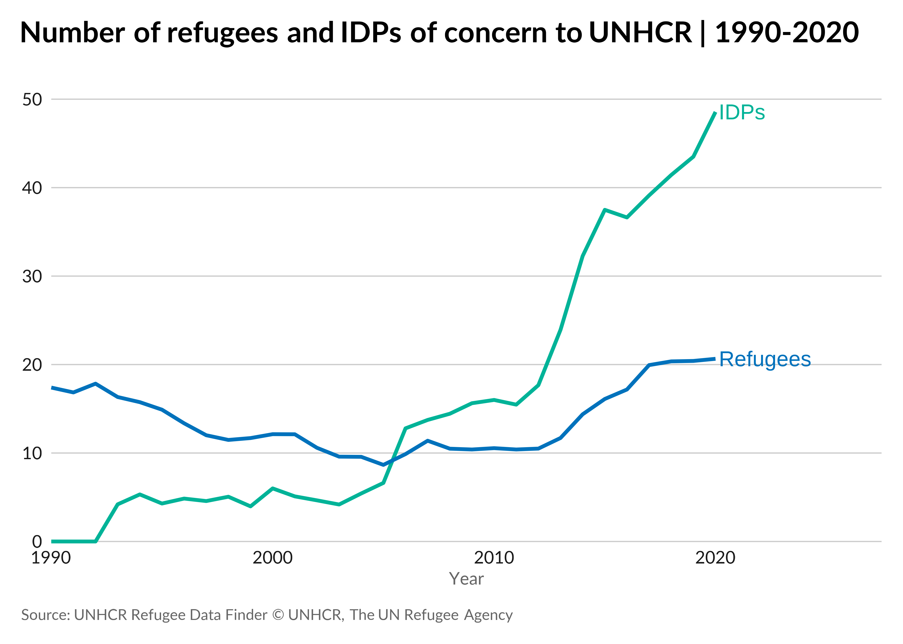
Area chart
df10 <- tribble(
~Month,~Unearmarked,~`Softly earmarked`,~Earmarked,~`Tightly earmarked`,
"Jan",15.1,0.6,1.6,19.2,
"Feb",15.3,3.9,1.7,21.9,
"Mar",11.9,7.6,20.1,22.8,
"Apr",15.7,9.8,41.8,39.8,
"May",22.8,14.8,34,51.3,
"Jun",29.1,18,34.6,53.7,
"Jul",41.5,61.9,126.6,63.7,
"Aug",58,61.6,118.1,92.9,
"Sep",62.6,78.2,130.1,86,
"Oct",69.3,81.3,146.6,88.8,
"Nov",76.6,83.5,145.7,95.8,
"Dec",99.8,102.1,145.7,107.3)
df10 |>
pivot_longer(cols = -Month) |>
mutate(ym = paste0("01-", Month, "-2021"),
ym = dmy(ym)) |>
ggplot() +
geom_area(aes(ym, value, fill = name)) +
scale_fill_unhcr_d(palette = "pal_unhcr") +
labs(title = "Monthly evolution of funding in West and Central Africa region | 2020",
y = "USD millions",
caption = "Source: UNHCR Refugee Data Finder\n© UNHCR, The UN Refugee Agency") +
scale_x_date(breaks = seq.Date(as.Date("2021-01-01"),
as.Date("2021-12-01"),
by = "1 month"),
date_labels = "%b",
expand = expansion(c(0, 0))) +
scale_y_continuous(expand = expansion(c(0, 0.1))) +
theme_unhcr(grid = "Y",
axis_title = "y")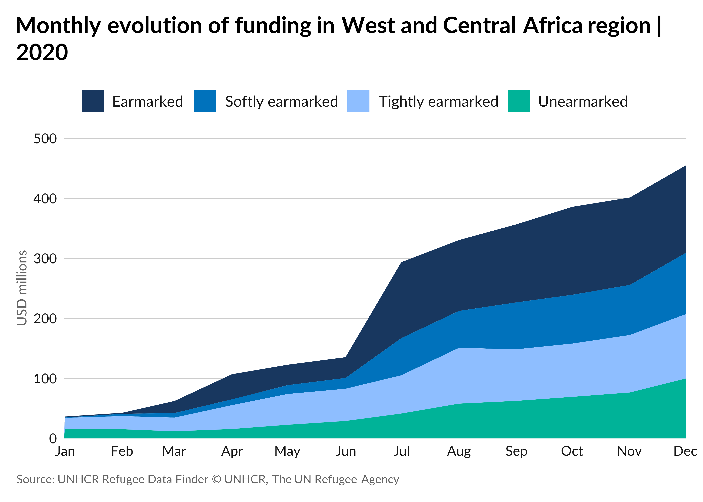
Combined column and line chart
df11 <- tribble(
~Year,~`Displaced population`,~`Proportion displaced`,
2007,42.69,6.38964,
2008,41.98,6.20603,
2009,43.25,6.31717,
2010,43.71,6.30724,
2011,42.5,6.0596,
2012,45.16,6.36237,
2013,51.2,7.12979,
2014,59.53,8.19344,
2015,65.3,8.88499,
2016,65.36,8.82591)
ggplot(data = df11) +
geom_col(aes(Year,
`Displaced population`, fill = "Displaced population"),
width = 0.7) +
geom_line(aes(Year,
`Proportion displaced` * 10, color = "Proportion displaced"),
size = 1) +
scale_fill_manual(values = setNames(unhcr_pal(n = 1, "pal_blue"),
"Displaced population")) +
scale_color_manual(values = setNames(unhcr_pal(n = 1, "pal_red"),
"Proportion displaced")) +
labs(title = "Trend of global displacement | 2007 - 2016",
caption = "Source: UNHCR Refugee Data Finder
© UNHCR, The UN Refugee Agency") +
scale_x_continuous(breaks = pretty_breaks(n = nrow(df11))) +
scale_y_continuous("Displaced population (millions)",
expand = expansion(c(0, 0.2)),
breaks = pretty_breaks(),
sec.axis = sec_axis(~ . / 10,
breaks = pretty_breaks(),
name = "Proportion displaced (number displaced per 1,000)")) +
theme_unhcr(grid = "Y",
axis_title = "y")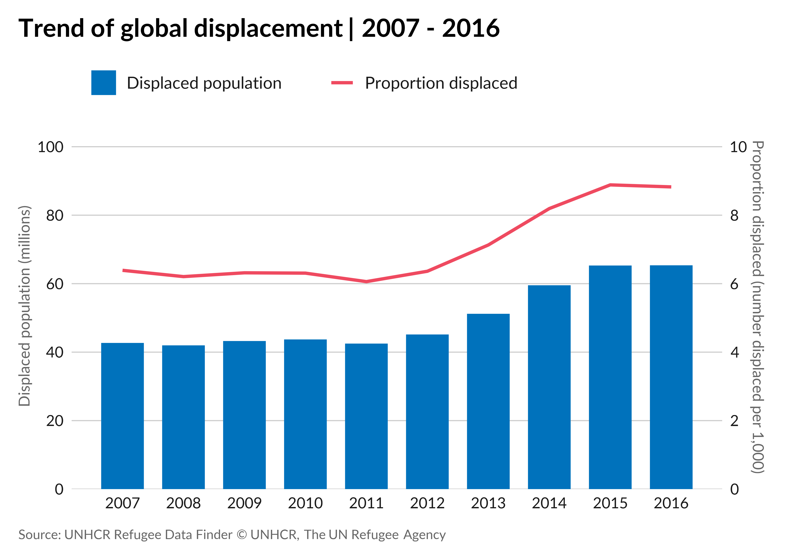
Treemap
df13 <- tribble(
~region,~workforce,
"West and Central Africa",5,
"Southern Africa",11,
"Middle East/North Africa",19,
"Europe",10,
"East and Horn of \nAfrica, and Great Lakes",22,
"Asia and Pacific",12,
"Americas",11,
"HQ", 9)
df13 |>
mutate(label = paste0(workforce, "%\n", region)) |>
ggplot(aes(area = workforce)) +
geom_treemap(color = "#FFFFFF",
size = 1,
fill = unhcr_pal(n = 1, "pal_blue"),
start = "topleft") +
geom_treemap_text(aes(label = label),
color = "#FFFFFF",
grow = FALSE,
start = "topleft",
family = "Lato") +
labs(title = "UNHCR global workforce by region | 2020",
caption = "Note: figures do not add up to 100 per cent du to rounding
Source: UNHCR Refugee Data Finder
© UNHCR, The UN Refugee Agency") +
theme_unhcr(axis = FALSE,
axis_title = FALSE,
grid = FALSE)
Pie chart
df12 <- tribble(
~label,~Funding,
"Received to date",144,
"Gap",150)
df12 |>
mutate(p = Funding / sum(Funding),
label2 = paste0("<strong>$", Funding, " M</strong>",
"<br>", label, " (",
round(100 * p, 1), "%)")) |>
ggplot() +
geom_arc_bar(aes(x0 = 0,
y0 = 0,
r0 = 0,
r = 1,
amount = Funding,
fill = label),
size = 1,
color = "#FFFFFF",
stat = "pie") +
geom_richtext(x = c(1.45, -1.25), y = c(-0.3, 0.3),
aes(label = label2),
size = 3,
fill = NA,
label.color = NA) +
scale_fill_unhcr_d(palette = "pal_unhcr") +
scale_x_continuous(expand = expansion(c(0.3, 0.5))) +
coord_fixed(clip = "off") +
theme_unhcr(grid = FALSE, axis = FALSE,
axis_title = FALSE,
axis_text = FALSE,
legend = FALSE)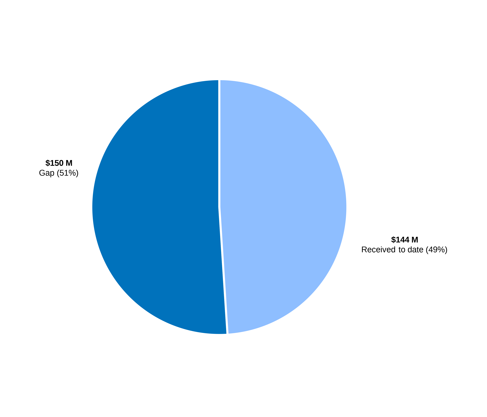
Donut chart
df12 |>
mutate(p = Funding / sum(Funding),
label2 = paste0("**$", Funding, " M**",
"<br>", label, " (",
round(100 * p, 1), "%)")) |>
ggplot() +
geom_arc_bar(aes(x0 = 0,
y0 = 0,
r0 = 0.65,
r = 1,
amount = Funding,
fill = label),
size = 1,
color = "#FFFFFF",
stat = "pie") +
geom_richtext(x = c(1.45, -1.25), y = c(-0.3, 0.3),
aes(label = label2),
size = 3,
fill = NA,
label.color = NA) +
geom_richtext(x = 0, y = 0,
label = paste0("**$", sum(df12$Funding), " M**",
"<br><span style='font-size:12pt'>Total required</span>"),
fill = NA,
label.color = NA,
size = 10) +
scale_fill_unhcr_d(palette = "pal_unhcr") +
scale_x_continuous(expand = expansion(c(0.3, 0.5))) +
coord_fixed(clip = "off") +
theme_unhcr(grid = FALSE, axis = FALSE,
axis_title = FALSE,
axis_text = FALSE,
legend = FALSE)